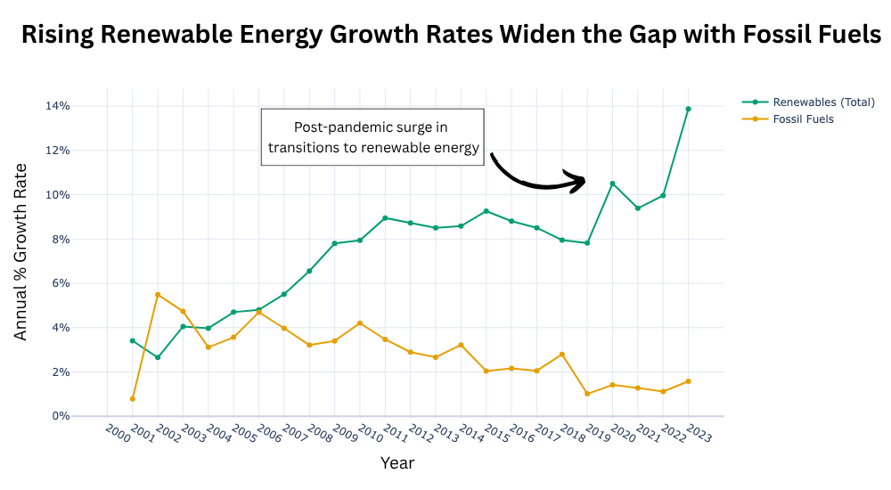
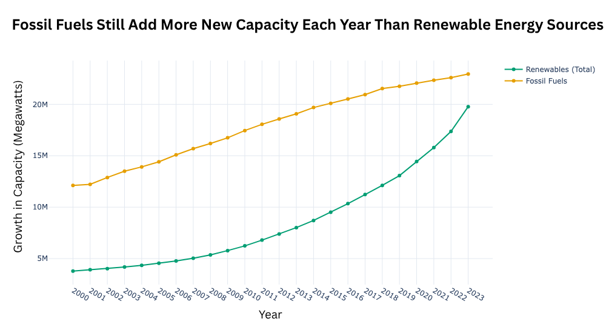

Proposition: Many countries are successfully transitioning toward renewable energy.
FOR the Proposition

Design Decisions and Rationale:
- Highlighting post-pandemic surge: 1, Earnest. This design decision provides an explanation for the sudden peak in growth and interest in renewables. It also highlights the difference between the growth and decline of the usage of the respective sources as a result of the pandemic.
- Annual Growth Rate Y-Axis: -2, Fully deceptive. This is an unfair comparison because the fossil fuel industry has existed for longer than the renewable resources industry. Since many corporations are attempting to find alternatives to fossil fuels, the change in growth of renewables each year will be greater than the change in growth of a long-standing industry. This is persuasive because it suggests that renewables are bigger than fossil fuels, while in actuality the addition in fossil fuel each year is greater than renewable energy.
- Line graph: 0, Neutral. Visualizing the growth rate and how it has changed historically since the early 2000s provides a persuasive visual of how the priorities of implementing renewable energy instead of fossil fuels have shifted.
- Color: 1, Slightly deceptive. The Okabe-Ito palette can be easily differentiated by people who are color blind. Furthermore, green is often associated with renewable energy, and orange can be associated with burning coal or fossil fuels.
AGAINST the Proposition

Design Decisions and Rationale:
Final Reflection
The creation of these two visuals was straightforward. For the pro position, we needed to create a visual to contextualize the growth of renewable resources. As for the visual for the opposing position, we needed to show how the overall usage is still reliant on fossil fuels, regardless of the difference in growth and total capacity of renewables over time. When analyzing the dataset and creating visuals, it was apparent just how dominant and reliant the usage of fossil fuels is over renewable energy, regardless of if the renewables were considered as a one unit against it. Hence, this is the reason we used these design choices for creating the visuals for each graph–annual growth per year vs cumulative usage of the respective fuel sources.
Ethical analysis and visualisation is the usage and representation of data in which it is being used within the proper context and effectiveness to convey straightforward, accurate information. With the graph arguing pro position, it was evident that to create a more persuasive visual, we needed to manipulate it within a different context–percent growth rather than cumulative usage. However we faced an initial dilemma arguing if this strategically represented our argument or was genuinely misleading: We argued that it was the latter. Although the data itself was not inaccurate, and all parts of the visual are labeled accurately, the general population would not recognize it as it is and would take it at face value. Rather than comparing growth rates between a long-standing industry and a growing one, it would be seen as renewable energy growing faster than fossil fuel energy.
Given the development of our work, distinguishing ‘acceptable’ persuasive choices from ‘misleading’ ones comes down to context. Misleading choices–like the ones we made for the pro position–focused on a smaller, more specific part of the overall data set. In contrast, the opp position visual was more earnest in its representation of the broader reality of overall energy consumption. In order to not be misleading, the information for a visual must be analyzed in a broader context, rather than a small sample or overly-specific idea which can askew the analysis of a dataset.